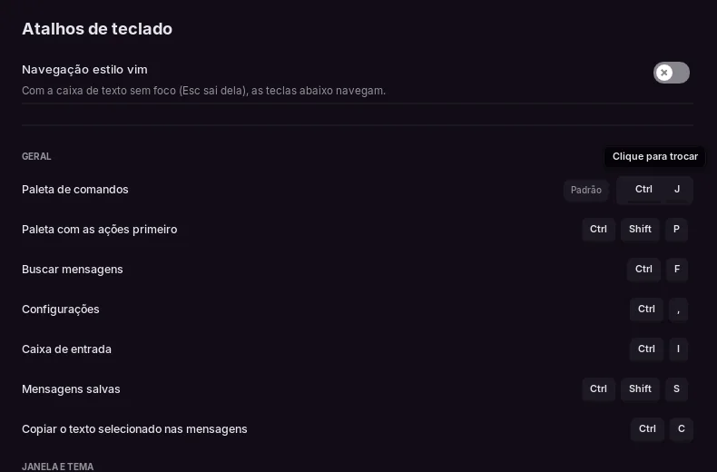

Atalhos e linha de comando
As mesmas teclas no Linux e no Windows. Não existe versão para macOS, então é sempre Ctrl, nunca Cmd. Estas tabelas saem de src/ui/atalhos.zig, a lista que o próprio app mostra em Configurações → Atalhos de teclado, então esta página e o app não ficam diferentes. Essas são as teclas de fábrica. As marcadas com ✎ (paleta, busca, configurações, caixa de entrada, salvas, temas, tela cheia, abas, mudo e ensurdecer) dá para trocar lá: veja Trocar um atalho.
Teclado
Geral
| Ação | Teclas |
|---|---|
| Paleta de comandos ✎ | Ctrl+K |
| Paleta com as ações primeiro ✎ | Ctrl+Shift+P |
| Buscar mensagens ✎ | Ctrl+F |
| Configurações ✎ | Ctrl+, |
| Caixa de entrada ✎ | Ctrl+I |
| Mensagens salvas ✎ | Ctrl+Shift+S |
| Copiar o texto selecionado nas mensagens | Ctrl+C |
Janela e tema
| Ação | Teclas |
|---|---|
| Próximo tema ✎ | F2 / Ctrl+T |
| Tema anterior ✎ | Shift+F2 / Ctrl+Shift+T |
| Aumentar ou diminuir a interface | Ctrl++ / Ctrl+- |
| Interface no tamanho normal | Ctrl+0 |
| Tela cheia ✎ | F11 / Alt+Enter |
Abas
| Ação | Teclas |
|---|---|
| Próxima aba ✎ | Ctrl+Tab |
| Aba anterior ✎ | Ctrl+Shift+Tab |
| Ir para a aba N | Alt+1…9 |
| Fechar aba ✎ | Ctrl+W |
| Abrir canal em nova aba | Ctrl+Clique |
| Fechar aba com o mouse | Botão do meio |
| Próximo conjunto de abas ✎ | Ctrl+Shift+PageDown |
Voz
| Ação | Teclas |
|---|---|
| Mutar ou desmutar o microfone ✎ | Ctrl+Shift+M |
| Ensurdecer ou voltar a ouvir ✎ | Ctrl+Shift+D |
Caixa de texto
| Ação | Teclas |
|---|---|
| Nova linha | Shift+Enter / Ctrl+Enter |
| Editar a última mensagem (caixa vazia) | ↑ |
| Cancelar resposta ou edição | Esc |
| Escolher na lista de @, #, :ab ou / | Tab / Enter |
| Colar uma imagem copiada | Ctrl+V |
Trocar um atalho
Em Configurações → Atalhos de teclado, clique nas teclas de um atalho marcado com ✎ e aperte a combinação nova. O Esc cancela. O app recusa a combinação, e diz o porquê, quando ela:
- já é de outro atalho, que ele diz qual é;
- já é de algo fixo: selecionar tudo, copiar, recortar, colar, desfazer e refazer, nova linha, o tamanho da interface,
Alt+1…9,Esc,Alt+F4, as teclas do vim, e andar ou apagar por palavra na caixa de texto; - não tem
CtrlnemAlt(uma teclaFsozinha pode), porque dispararia enquanto você digita; - é
Ctrl+Altcom letra, número ou sinal, que é o AltGr em muitos teclados.
Padrão volta o atalho de fábrica. Um atalho trocado tem uma combinação só, guardada no settings.kdl numa linha como keybind "paleta" "Ctrl+J". As dicas que citam um atalho, como as dos botões de mudo e de ensurdecer, mostram as teclas de agora.

Mouse e outras teclas
- Aperte para falar: a tecla ou o botão do mouse que você escolher em Configurações → Voz. No Linux, só funciona com a janela em foco. No Windows, funciona também com outra janela em foco, como um jogo, para a maioria das teclas: letras,
F13aF24e os botões laterais do mouse, por exemplo. Configurações → Voz avisa quando a tecla escolhida só funciona com a janela em foco. - O botão direito funciona em mensagens, usuários, canais e servidores.
- Esc fecha o que estiver por cima: um menu, o visualizador de imagem, a paleta, as configurações.
- Zoom:
Ctrlcom a tecla=/+ou o+,-e0do teclado numérico. Vai de 75% a 200% e fica salvo. - Plugins podem somar atalhos próprios com
larper.keybind; o cartão de cada plugin em Configurações → Plugins lista os dele. Os atalhos do próprio app não usam a tecla do Windows (Super), então ela fica livre para eles. - Se um atalho não faz nada, o seu ambiente de trabalho ou gerenciador de janelas pode estar pegando ele antes.
Navegação estilo vim
Vem desligada. Ligue em Configurações → Atalhos de teclado. As teclas funcionam enquanto a caixa de texto não está em foco, e o Esc sai da caixa mantendo o que você digitou.
| Ação | Teclas |
|---|---|
| Rolar para baixo / para cima | j / k |
| Topo / fim da conversa | gg / G |
| Meia página para baixo / para cima | Ctrl+d / Ctrl+u |
| Próximo / anterior canal | J / K |
| Voltar para a caixa de texto | i / Enter |
| Sair da caixa de texto | Esc |
| Buscar (paleta) | / |
Linha de comando
larpercord [options]| Opção | O que faz |
|---|---|
--theme NAME | começa com esse tema |
--list-themes | lista os temas embutidos e sai |
--mode MODE | claro (ou light) ou escuro, ignorando as suas configurações |
--lang LANG | pt, en, ja ou ru, ignorando as suas configurações |
--demo | usa os dados de demonstração mesmo com token |
--login | mostra a tela de login, ignorando o token salvo |
--settings | abre direto nas configurações |
--no-live | desliga as mensagens automáticas do modo demonstração |
--shot FILE.png | salva uma captura de tela quando a tela se acalma e sai |
--stats | imprime a linha do tempo da abertura e o custo de cada quadro |
--qa | roda o teste automático da interface, com capturas de tela em qa-out/ (builds de debug, ou com -Dqa=true) |
--qa-list | lista as baterias do QA que o QA_SUITE aceita (nos mesmos builds) |
--voice-test GUILD CHANNEL | entra num canal de voz por 25 s, sempre mudo (precisa de LARPER_TOKEN) |
--tls-check URL | confere se a rede do app funciona neste sistema: um pedido HTTPS ao endereço com as configurações de certificado do app, e se a libcurl tem WebSocket. Imprime o resultado e sai com erro se um dos dois falhar |
--restarted | usado pelo próprio app quando ele reinicia depois de uma atualização; você não precisa dele |
--help | mostra o texto de uso |
--version | mostra a versão e sai |
No Windows o programa é o larpercord.exe, e ele não fica no PATH. No PowerShell, chame pelo caminho completo (é onde o install.ps1 instala; se você descompactou o zip, use essa pasta), ou ponha as opções no fim do Destino de um atalho:
& "$env:LOCALAPPDATA\Programs\larperCord\larpercord.exe" --theme vidroA versão para Windows não tem console, então as opções que só imprimem texto (--help, --list-themes, --stats, --tls-check, --version) não mostram nada no terminal. Para ler esse texto, mande para um arquivo:
Start-Process "$env:LOCALAPPDATA\Programs\larperCord\larpercord.exe" -ArgumentList '--list-themes' -NoNewWindow -Wait -RedirectStandardError saida.txt; Get-Content saida.txtO --version escreve na saída padrão, então para ele use -RedirectStandardOutput no lugar de -RedirectStandardError.
Os temas embutidos também aparecem em Configurações → Aparência.
Nos dois sistemas, se o larperCord já estiver aberto, mesmo só na bandeja, abrir de novo só traz aquela janela de volta e ignora as outras opções. Encerre antes (Sair no menu do ícone da bandeja). --demo, --shot, --list-themes, --help, --version, --tls-check e --voice-test funcionam de qualquer jeito.
Variáveis de ambiente
Defina para uma execução, no terminal de onde você abre o app:
LARPER_RENDERER=software larpercord# Windows, PowerShell: vale até você fechar esta janela
$env:LARPER_RENDERER = 'software'
& "$env:LOCALAPPDATA\Programs\larperCord\larpercord.exe"No cmd, é set LARPER_RENDERER=software antes de rodar o .exe. As variáveis só valem quando o app abre: se ele já estiver aberto, mesmo só na bandeja, encerre antes, senão abrir de novo só traz de volta a janela aberta.
| Variável | O que faz |
|---|---|
LARPER_TOKEN | o token da conta (veja Conectar a sua conta) |
LARPER_RENDERER | escolhe o backend de renderização do SDL: opengl, vulkan, gpu ou software, e no Windows também direct3d11 ou direct3d12. Vale mais que a escolha em Configurações → Desempenho → Renderizador |
LARPER_HIDDEN | abre com a janela oculta. O app não desenha nada enquanto ela está oculta, então a memória mede bem menos do que com uma janela de verdade |
LARPER_BENCH | redesenha sem parar, para medir o custo de um quadro |
LARPER_VOICE_DEBUG | imprime no terminal o que acontece numa call (opcodes, códigos de fechamento, DAVE). Nunca imprime tokens nem chaves. No Windows não há terminal: ligue Configurações → Avançado → Salvar registro de depuração, que grava o mesmo |
LARPER_DEBUG_MEDIA | registra por que uma imagem não carregou. No Windows, use o registro de depuração, como acima |
LARPER_READ_DEBUG | registra por que um canal ficou não lido: uma mensagem nova, ou uma confirmação de leitura do Discord. O registro de depuração grava o mesmo |
LARPER_NO_FFMPEG | finge que o FFmpeg não está instalado |
LARPER_EGL_ALL | só no Linux: desliga o truque que pula drivers EGL desnecessários |
LARPER_SCENE | monta uma cena para as capturas de tela da documentação |
LARPER_RECORD, LARPER_RECORD_FRAMES | grava a tela de login como quadros numa pasta |
LARPER_FLOOD | manda N mudanças de presença por segundo no modo demonstração (teste de carga) |
LARPER_DEMO_VIDEO | troca o vídeo da demonstração por um .mp4 seu (testes) |
LARPER_NO_PICS, LARPER_SQUARE | desenham os avatares sem foto, ou quadrados, para medir quanto as fotos custam |
LARPER_INSTANCE | mantém a regra de uma cópia por vez também no modo demonstração e nas capturas de tela (testes) |
LARPER_SHOT_REAL | com --shot, usa a conta salva no lugar dos dados de demonstração |
XDG_CONFIG_HOME e XDG_CACHE_HOME são respeitadas nos dois sistemas (no Windows elas tomam o lugar de %APPDATA% e %LOCALAPPDATA%), e ajudam a rodar com uma configuração limpa.